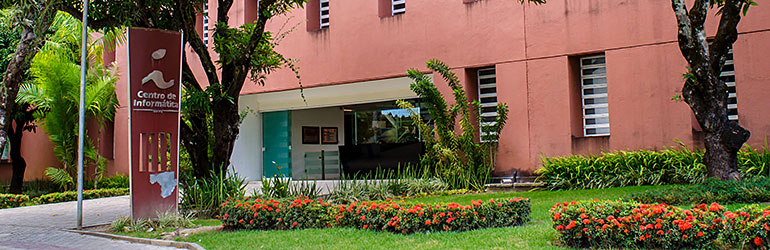

BRENO RAMOS RODRIGUES
Olá! Me chamo Breno e sou estudante de Ciência da Computação na UFPE(Universidade Federal de Pernambuco) e vou falar um pouco sobre mim nesse site web.
Este é um projeto da disciplina:
Introdução à Computação - IF668

Sou, também, apaixonado por lógica e matemática, um dos principais motivos pelos quais escolhi este curso.
Hoje, ministro monitoria para um dos maiores cursos de isolada de matemática de Recife: o curso de matemática
Marconi e Ricardo.
Vou listar, agora, algumas das muitas coisas que gosto
1.Curtir o Carnaval
2.Me reunir com meus amigos
3.Viajar
4.Torcer pelo meu time
5.Jogar um lolzin